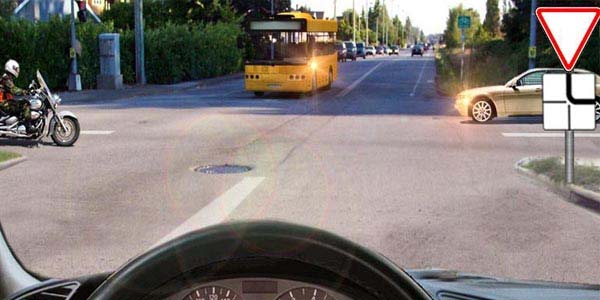
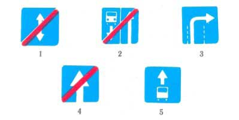
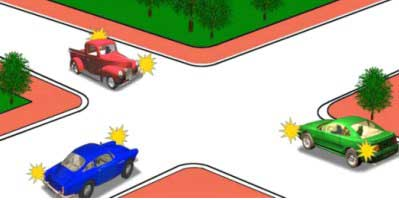
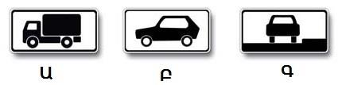
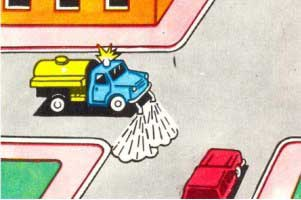
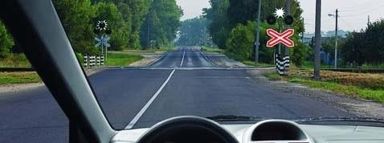
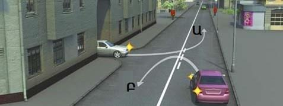
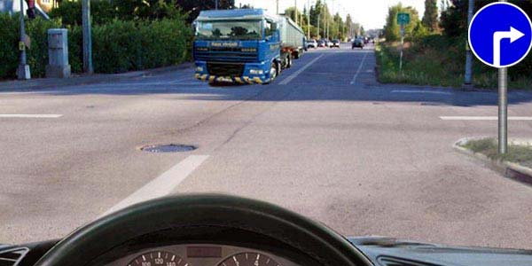

Թեստ 47
30:00
1. "Ճանապարհային երթևեկության անվտանգության ապահովման մասին" ՀՀ օրենքի համաձայն՝ տրանսպորտային միջոցի թույլատրելի առավելագույն զանգված է համարվում՝
2. "Ճանապարհային երթևեկության անվտանգության ապահովման մասին" ՀՀ օրենքի համաձայն՝ D կարգի և D1 ենթակարգի տրանսպորտային միջոցներ վարելու իրավունքի վկայական կարող է տրվել այն անձանց, ովքեր ունեն`
3. Տրանսպորտային միջոցների շահագործումն արգելվում է, եթե՝
4. Տրանսպորտային միջոցների շահագործումն արգելվում է, եթե`
5. Եթե մտադիր եք շարունակել երթևեկությունն ուղիղ, ու՞մ պետք է զիջեք ճանապարհը:

6. Նշաններից ո՞րն է կոչվում «Միակողմ երթևեկությամբ ճանապարհի վերջ»:

7. Խաչմերուկը երկրորդը կանցնի`

8. Պարտավոր է արդյո՞ք վարորդն այս իրավիճակում ձախ շրջադարձ կատարելիս լուսային ցուցիչով ազդանշան տալ
9. Թույլատրվո՞ւմ է վարորդին կատարել ձախ շրջադարձ
10. Ո՞ր ցուցանակով կիրառված նշանի ազդեցությունն է տարածվում 3,5 տոննայից թեթև թույլատրելի առավելագույն զանգվածով բեռնատարի վարորդի վրա

11. Այս լուսացույցը կիրառվում է երթևեկությունը կարգավորելու համար`
12. Ի՞նչ է նշանակում այս գծանշումը:
13. Բնակավայրերից դուրս մեխանիկական տրանսպորտային միջոցներ քարշակելիս երթևեկության արագությունը չպետք է գերազանցի`
14. Ո՞ր տրանսպորտային միջոցի վարորդն ունի առաջնահերթ երթևեկության իրավունք:

15. Ուղիղ երթևեկելու դեպքում
16. Գծանցն անցնելը

17. Ո՞ր հետագծով երթևեկող վարորդը չի խախտում գծանշման պահանջները

18. Պարտավո՞ր է արդյոք վարորդը միացնել շրջադարձի ցուցիչը տվյալ դեպքում:
